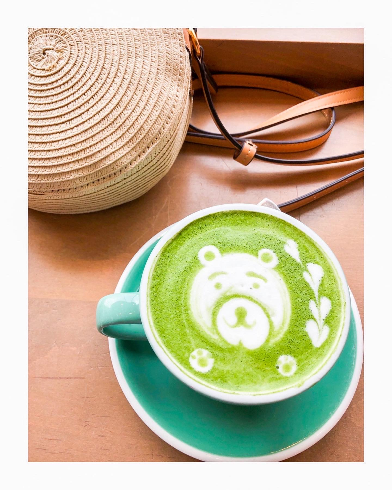
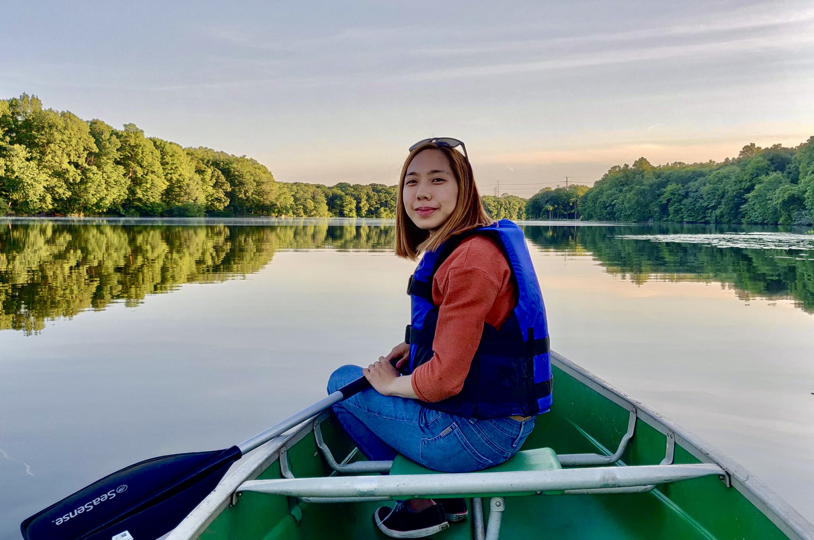

Hello World!
My name is Rosemary and
I am a software engineer!
Enhancing and maximizing user experience and interface when developing websites and applications through code is my passion.
My interest in web development began when I was a teenager while I customized Xanga and Tumblr blog themes, which introduced me to the basics of HTML and CSS.
I was born to CREATE!
Growing up, my mother always encouraged creativity and art. My mom took me to art museums and signed me up for art classes. I explored Adobe Illustrator, Lightroom, and Photoshop, and even started an Etsy shop where I sold greeting cards with my designs.
Coding further fuels my ingenuity!
In my previous career, I worked for 5 years as a pediatric occupational therapist with experience in working with children with various diagnoses including autism, developmental delays, and sensory, fine motor, & visual motor challenges in the private practice and school setting.
My previous career taught me how to be a great problem solver, team player, and flexible.
Fast-forward to today, and I am on my journey to become a software engineer through SheCodes. Check out my
profile!
Here are a few technologies I’ve been working with recently:
When I'm not busy coding üë©ü誂Äçüíª,
I am traveling üß≥,
visiting art exhibits üñº,

cafe hopping ☕️,

and being in nature üåº!
Let's chat!